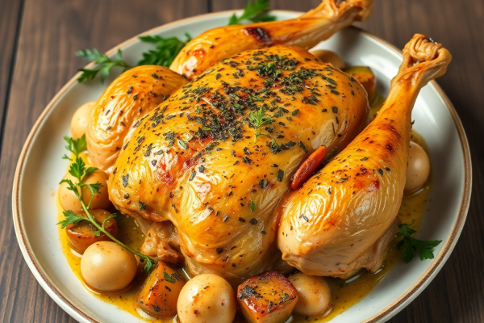
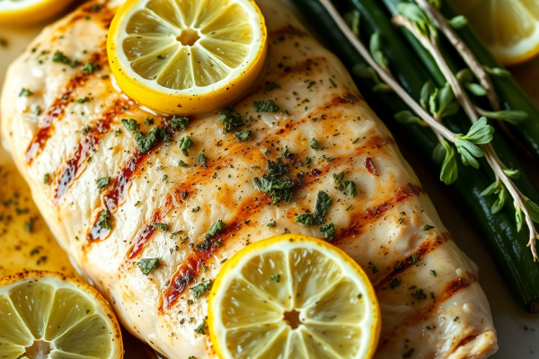
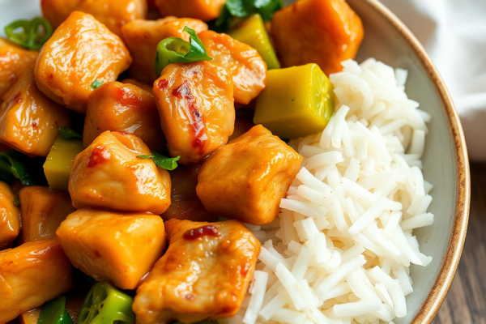

Chicken Recipes
Delicious ways to prepare chicken

Classic Roast Chicken
EasyA simple yet delicious roast chicken with herbs and vegetables.
1 hour 30 minutes
Spicy Chicken Curry
MediumA flavorful curry with tender chicken pieces and aromatic spices.
45 minutes
Chicken Cordon Bleu
HardElegant stuffed chicken breasts with ham and cheese, breaded and baked.
1 hour

Lemon Herb Grilled Chicken
EasyJuicy grilled chicken with a bright lemon and herb marinade.
30 minutes

Quick Chicken Stir Fry
EasyA fast and healthy stir fry with chicken and colorful vegetables.
20 minutes
Homemade Chicken Pot Pie
MediumComforting pot pie with a creamy chicken filling and flaky crust.
1 hour 15 minutes
Classic Roast Chicken
Ingredients
- 1 whole chicken (about 4-5 pounds)
- 2 tablespoons olive oil
- 2 tablespoons butter, softened
- 3 cloves garlic, minced
- 1 tablespoon fresh rosemary, chopped
- 1 tablespoon fresh thyme, chopped
- 1 lemon, halved
- Salt and freshly ground black pepper
- 1 onion, quartered
- 2 carrots, roughly chopped
- 2 celery stalks, roughly chopped
- 1 cup chicken broth
Kitchen Tools
- Roasting pan with rack
- Kitchen twine
- Meat thermometer
- Basting brush
- Sharp knife
- Cutting board
Preparation Steps
1
Preheat your oven to 220°C (425°F). Remove the chicken from the refrigerator and allow it to come to room temperature for about 30 minutes.
2
Pat the chicken dry with paper towels, inside and out. This helps achieve crispy skin.
3
In a small bowl, mix the softened butter with minced garlic, chopped rosemary, and thyme.
4
Gently loosen the skin over the chicken breast and thighs, being careful not to tear it. Spread half of the herb butter mixture under the skin.
5
Rub the outside of the chicken with olive oil and the remaining herb butter. Season generously with salt and pepper.
6
Stuff the cavity with the lemon halves and a few sprigs of fresh herbs if desired.
7
Tie the legs together with kitchen twine and tuck the wing tips under the body.
8
Place the onion, carrots, and celery in the bottom of the roasting pan, then place the chicken on the rack above the vegetables.
9
Pour the chicken broth into the bottom of the pan.
10
Roast for 15 minutes at 220°C (425°F), then reduce the temperature to 190°C (375°F) and continue roasting for about 1 hour to 1 hour and 15 minutes, or until a meat thermometer inserted into the thickest part of the thigh registers 74°C (165°F).
11
Baste the chicken with the pan juices every 20 minutes during cooking.
12
Once done, remove from the oven and let rest for 15 minutes before carving.
13
Serve with the roasted vegetables and drizzle with the pan juices.
Spicy Chicken Curry
Ingredients
- 2 pounds boneless, skinless chicken thighs, cut into 1-inch pieces
- 2 tablespoons vegetable oil
- 1 large onion, finely chopped
- 4 cloves garlic, minced
- 2 tablespoons fresh ginger, grated
- 2 tablespoons curry powder
- 1 teaspoon ground cumin
- 1 teaspoon ground coriander
- 1/2 teaspoon turmeric
- 1/4 teaspoon cayenne pepper (adjust to taste)
- 1 can (14 oz) diced tomatoes
- 1 can (14 oz) coconut milk
- 1 cup chicken broth
- Salt and pepper to taste
- Fresh cilantro for garnish
- Cooked rice for serving
Kitchen Tools
- Large deep skillet or Dutch oven
- Sharp knife
- Cutting board
- Measuring spoons
- Wooden spoon
Preparation Steps
1
Season the chicken pieces with salt and pepper.
2
Heat the vegetable oil in a large skillet or Dutch oven over medium-high heat.
3
Add the chicken pieces in batches and cook until browned on all sides, about 5 minutes per batch. Remove and set aside.
4
In the same pan, add the chopped onion and cook until softened, about 5 minutes.
5
Add the minced garlic and grated ginger, and cook for another minute until fragrant.
6
Add the curry powder, cumin, coriander, turmeric, and cayenne pepper. Stir and cook for 1 minute to toast the spices.
7
Add the diced tomatoes with their juice and stir, scraping up any browned bits from the bottom of the pan.
8
Return the chicken to the pan, along with any accumulated juices.
9
Pour in the coconut milk and chicken broth, and stir to combine.
10
Bring to a simmer, then reduce heat to low. Cover and cook for 20-25 minutes, or until the chicken is tender and the sauce has thickened slightly.
11
Taste and adjust seasoning with salt and pepper as needed.
12
Serve hot over cooked rice, garnished with fresh cilantro.
Chicken Cordon Bleu
Ingredients
- 4 boneless, skinless chicken breasts
- 8 thin slices of ham
- 8 slices Swiss cheese
- 1/2 cup all-purpose flour
- 1 teaspoon salt
- 1/2 teaspoon black pepper
- 2 large eggs
- 2 tablespoons milk
- 1 cup panko breadcrumbs
- 1/2 cup grated Parmesan cheese
- 1 teaspoon dried thyme
- 1/2 teaspoon garlic powder
- 4 tablespoons butter, melted
- Cooking spray
Kitchen Tools
- Meat mallet
- Plastic wrap
- Toothpicks
- 3 shallow dishes for breading station
- Baking sheet
- Wire rack
- Parchment paper
- Meat thermometer
Preparation Steps
1
Preheat the oven to 190°C (375°F). Line a baking sheet with parchment paper and place a wire rack on top. Spray the rack with cooking spray.
2
Place the chicken breasts on a cutting board and cover with plastic wrap. Using a meat mallet, pound each chicken breast to about 1/4-inch thickness.
3
Season each chicken breast with salt and pepper on both sides.
4
Layer 2 slices of ham and 2 slices of Swiss cheese on each chicken breast.
5
Roll up each chicken breast tightly, tucking in the sides as you roll. Secure with toothpicks.
6
Set up a breading station: In the first shallow dish, mix the flour with salt and pepper. In the second dish, whisk together eggs and milk. In the third dish, combine panko breadcrumbs, Parmesan cheese, dried thyme, and garlic powder.
7
Dredge each rolled chicken breast first in the flour mixture, shaking off excess.
8
Next, dip into the egg mixture, allowing excess to drip off.
9
Finally, coat thoroughly in the breadcrumb mixture, pressing gently to adhere.
10
Place the breaded chicken rolls on the prepared wire rack.
11
Drizzle or brush each chicken roll with melted butter.
12
Bake in the preheated oven for 30-35 minutes, or until the chicken is golden brown and the internal temperature reaches 74°C (165°F).
13
Remove from the oven and let rest for 5 minutes. Carefully remove the toothpicks before serving.
14
Slice each roll into medallions and serve with a side salad or your favorite vegetables.
Lemon Herb Grilled Chicken
Ingredients
- 4 boneless, skinless chicken breasts
- 1/4 cup olive oil
- 3 tablespoons fresh lemon juice
- 2 cloves garlic, minced
- 1 tablespoon fresh rosemary, chopped
- 1 tablespoon fresh thyme, chopped
- 1 tablespoon fresh parsley, chopped
- 1 teaspoon lemon zest
- 1 teaspoon salt
- 1/2 teaspoon black pepper
- Lemon wedges for serving
Kitchen Tools
- Grill or grill pan
- Mixing bowl
- Whisk
- Tongs
- Meat thermometer
- Resealable plastic bag or shallow dish for marinating
Preparation Steps
1
In a mixing bowl, whisk together olive oil, lemon juice, minced garlic, chopped herbs, lemon zest, salt, and pepper.
2
Place the chicken breasts in a resealable plastic bag or shallow dish.
3
Pour the marinade over the chicken, making sure all pieces are well coated.
4
Seal the bag or cover the dish and refrigerate for at least 30 minutes, or up to 4 hours for more flavor.
5
Preheat your grill or grill pan to medium-high heat.
6
Remove the chicken from the marinade, allowing excess to drip off.
7
Place the chicken on the preheated grill and cook for 5-7 minutes per side, or until the internal temperature reaches 74°C (165°F) and grill marks appear.
8
Transfer the grilled chicken to a clean plate and let rest for 5 minutes before serving.
9
Serve with fresh lemon wedges and a sprinkle of additional chopped herbs if desired.
Quick Chicken Stir Fry
Ingredients
- 1 pound boneless, skinless chicken breasts, cut into thin strips
- 2 tablespoons vegetable oil
- 1 red bell pepper, sliced
- 1 yellow bell pepper, sliced
- 1 cup snap peas or snow peas
- 1 cup broccoli florets
- 1 carrot, julienned
- 3 cloves garlic, minced
- 1 tablespoon fresh ginger, grated
- 3 tablespoons soy sauce
- 1 tablespoon oyster sauce
- 1 tablespoon honey
- 1 teaspoon sesame oil
- 1/4 teaspoon red pepper flakes (optional)
- 2 green onions, sliced
- 1 tablespoon sesame seeds
- Cooked rice for serving
Kitchen Tools
- Wok or large skillet
- Sharp knife
- Cutting board
- Small bowl for sauce
- Wooden spoon or spatula
Preparation Steps
1
In a small bowl, whisk together soy sauce, oyster sauce, honey, sesame oil, and red pepper flakes (if using). Set aside.
2
Heat 1 tablespoon of vegetable oil in a wok or large skillet over high heat.
3
Add the chicken strips and stir-fry for 4-5 minutes until golden brown and cooked through. Remove from the wok and set aside.
4
Add the remaining tablespoon of oil to the wok.
5
Add the minced garlic and grated ginger, and stir-fry for 30 seconds until fragrant.
6
Add the bell peppers, snap peas, broccoli, and carrots. Stir-fry for 3-4 minutes until vegetables are crisp-tender.
7
Return the cooked chicken to the wok and pour the sauce over everything.
8
Toss everything together and cook for another 1-2 minutes until the sauce has thickened slightly and everything is well coated.
9
Remove from heat and stir in the sliced green onions.
10
Serve hot over cooked rice, garnished with sesame seeds.
Homemade Chicken Pot Pie
Ingredients
- 2 refrigerated pie crusts (or homemade)
- 1/3 cup butter
- 1/3 cup all-purpose flour
- 1/2 cup onion, diced
- 1/2 cup celery, diced
- 1/2 cup carrots, diced
- 1/3 cup frozen peas
- 1/2 teaspoon salt
- 1/4 teaspoon black pepper
- 1/4 teaspoon dried thyme
- 1/4 teaspoon dried sage
- 1 3/4 cups chicken broth
- 2/3 cup milk
- 2 1/2 cups cooked chicken, shredded or cubed
- 1 egg, beaten (for egg wash)
Kitchen Tools
- 9-inch pie dish
- Large saucepan
- Whisk
- Wooden spoon
- Measuring cups and spoons
- Pastry brush
- Rolling pin (if using homemade crust)
- Knife or kitchen scissors
Preparation Steps
1
Preheat the oven to 220°C (425°F).
2
If using refrigerated pie crusts, let them come to room temperature according to package instructions.
3
In a large saucepan, melt butter over medium heat.
4
Add the diced onion, celery, and carrots. Cook for 5-7 minutes until vegetables begin to soften.
5
Stir in the flour, salt, pepper, thyme, and sage. Cook for 1 minute, stirring constantly.
6
Gradually stir in the chicken broth and milk, cooking and stirring until the mixture thickens and bubbles, about 5 minutes.
7
Stir in the cooked chicken and frozen peas. Remove from heat and set aside.
8
Place one pie crust in the bottom of a 9-inch pie dish.
9
Pour the chicken mixture into the pie crust.
10
Top with the second pie crust. Seal and crimp the edges. Cut several slits in the top crust to allow steam to escape.
11
Brush the top crust with beaten egg for a golden finish.
12
Bake for 30-35 minutes, or until the crust is golden brown.
13
Let stand for 10 minutes before serving to allow the filling to set.
About Chickens
Learn more about our chickens and this website
Chicken History
Chickens were domesticated from wild red junglefowl in Southeast Asia around 8,000 years ago. They have since become one of the most common domestic animals, with a total population of more than 19 billion as of 2011.
Humans keep chickens primarily as a source of food (consuming both their meat and eggs) and, less commonly, as pets. Chickens are one of the most widespread and recognizable of domestic birds.
Fascinating Chicken Facts
-
Chickens are omnivores and will eat seeds, insects, small mice, and even lizards.
-
A hen can lay up to 300 eggs per year, with some breeds being more productive than others.
-
Chickens have a lifespan of 5-10 years, though some can live much longer with proper care.
-
Chickens are intelligent animals that can recognize up to 100 different faces of people or other chickens.
Photography
All images on this site are generated using AI technology to highlight the unique features and beauty of different chicken breeds.
Disclaimer
No chicken or AI was harmed during the making of this website.